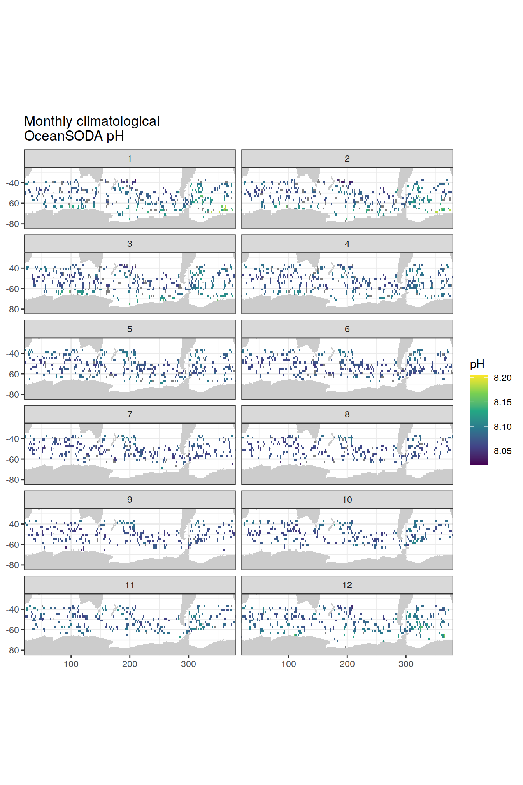
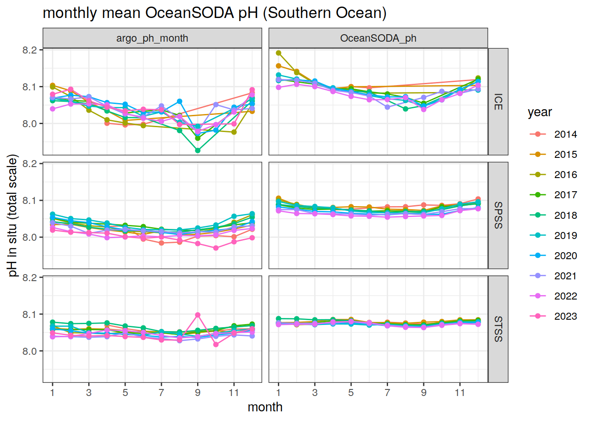
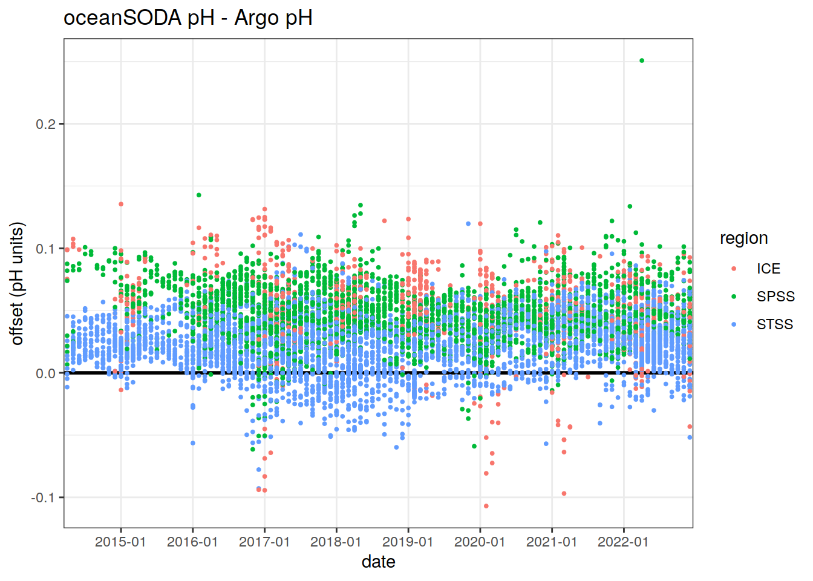
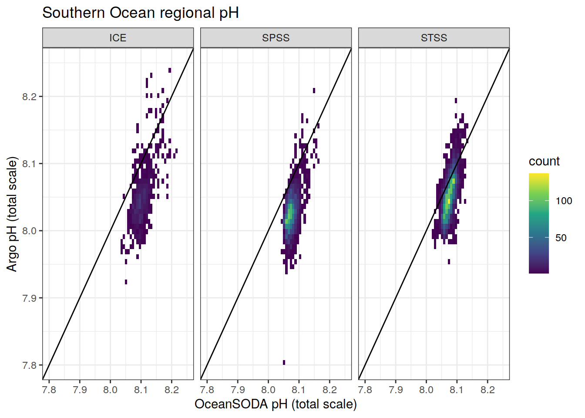
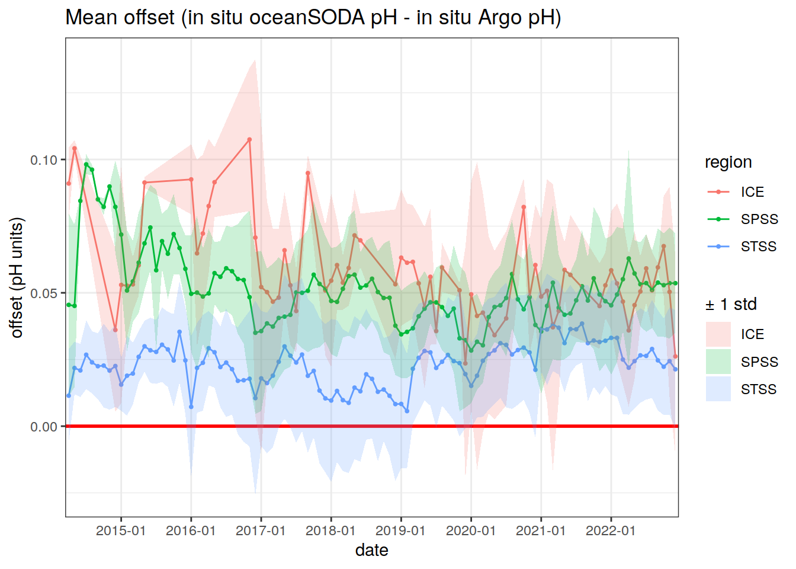
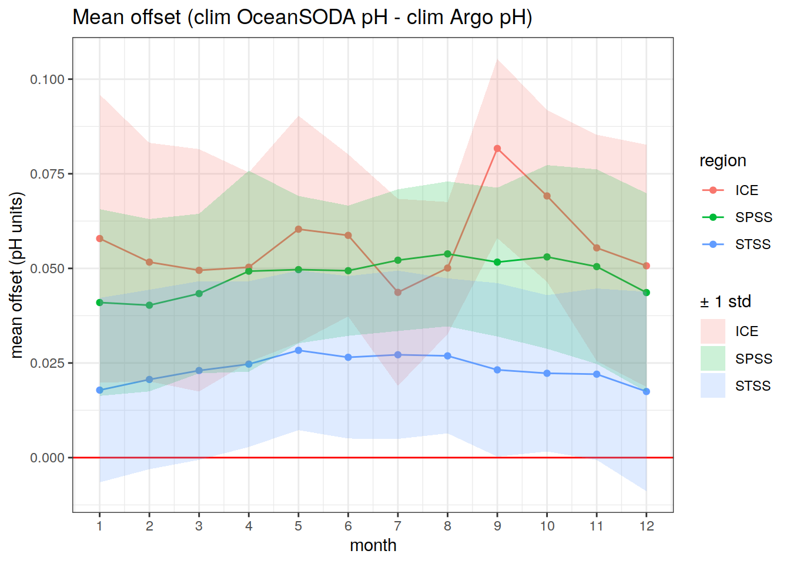
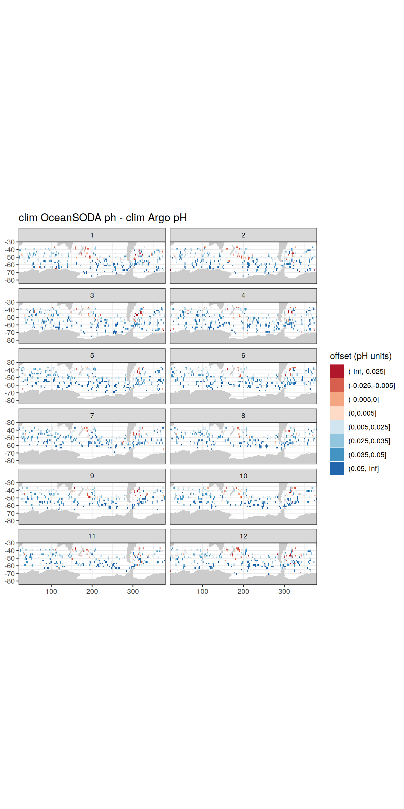
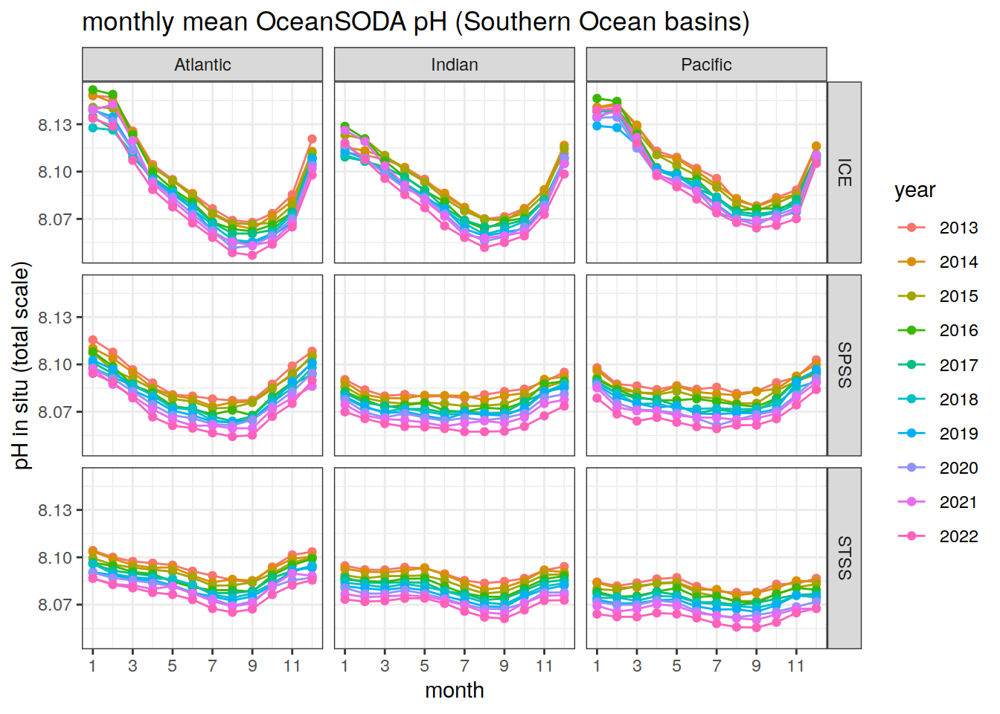
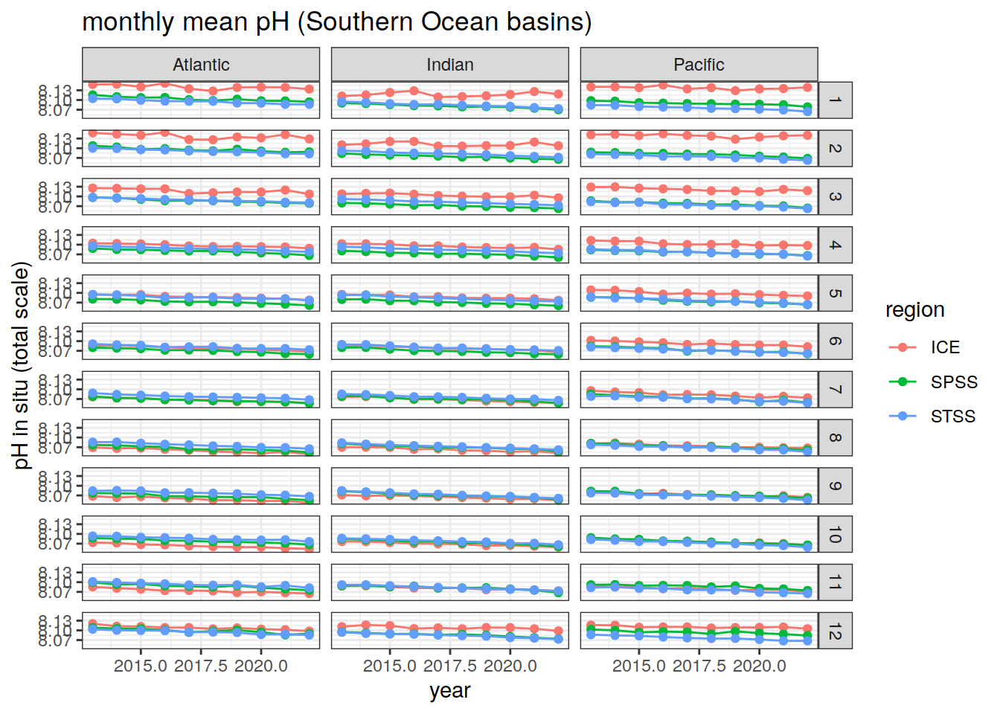

Last updated: 2022-05-23
Checks: 7 0
Knit directory: bgc_argo_r_argodata/
This reproducible R Markdown analysis was created with workflowr (version 1.7.0). The Checks tab describes the reproducibility checks that were applied when the results were created. The Past versions tab lists the development history.
Great! Since the R Markdown file has been committed to the Git repository, you know the exact version of the code that produced these results.
Great job! The global environment was empty. Objects defined in the global environment can affect the analysis in your R Markdown file in unknown ways. For reproduciblity it’s best to always run the code in an empty environment.
The command set.seed(20211008) was run prior to running the code in the R Markdown file. Setting a seed ensures that any results that rely on randomness, e.g. subsampling or permutations, are reproducible.
Great job! Recording the operating system, R version, and package versions is critical for reproducibility.
Nice! There were no cached chunks for this analysis, so you can be confident that you successfully produced the results during this run.
Great job! Using relative paths to the files within your workflowr project makes it easier to run your code on other machines.
Great! You are using Git for version control. Tracking code development and connecting the code version to the results is critical for reproducibility.
The results in this page were generated with repository version b41e65f. See the Past versions tab to see a history of the changes made to the R Markdown and HTML files.
Note that you need to be careful to ensure that all relevant files for the analysis have been committed to Git prior to generating the results (you can use wflow_publish or wflow_git_commit). workflowr only checks the R Markdown file, but you know if there are other scripts or data files that it depends on. Below is the status of the Git repository when the results were generated:
Ignored files:
Ignored: .RData
Ignored: .Rhistory
Ignored: .Rproj.user/
Ignored: output/
Untracked files:
Untracked: code/OceanSODA_argo_extremes.R
Untracked: code/creating_dataframe.R
Untracked: code/creating_map.R
Untracked: code/merging_oceanSODA_Argo.R
Untracked: code/pH_data_timeseries.R
Unstaged changes:
Modified: code/Workflowr_project_managment.R
Note that any generated files, e.g. HTML, png, CSS, etc., are not included in this status report because it is ok for generated content to have uncommitted changes.
These are the previous versions of the repository in which changes were made to the R Markdown (analysis/oceanSODA_argo_pH.Rmd) and HTML (docs/oceanSODA_argo_pH.html) files. If you’ve configured a remote Git repository (see ?wflow_git_remote), click on the hyperlinks in the table below to view the files as they were in that past version.
| File | Version | Author | Date | Message |
|---|---|---|---|---|
| html | 4173c20 | jens-daniel-mueller | 2022-05-12 | Build site. |
| html | dfe89d7 | jens-daniel-mueller | 2022-05-12 | Build site. |
| html | 710edd4 | jens-daniel-mueller | 2022-05-11 | Build site. |
| Rmd | 2f20a76 | jens-daniel-mueller | 2022-05-11 | rebuild all after subsetting AB profiles and code cleaning |
Compare BGC-Argo pH data to pH from the OceanSODA surface data product
theme_set(theme_bw())Load in surface Argo pH and the OceanSODA pH, gridded to 1x1º
path_argo <- '/nfs/kryo/work/updata/bgc_argo_r_argodata'
path_argo_preprocessed <- paste0(path_argo, "/preprocessed_bgc_data")
path_emlr_utilities <- "/nfs/kryo/work/jenmueller/emlr_cant/utilities/files/"# load in OceanSODA data and Argo pH
OceanSODA <- read_rds(file = paste0(path_argo_preprocessed, "/OceanSODA.rds"))
argo <-
read_rds(file = paste0(path_argo_preprocessed, "/bgc_merge_flag_AB.rds")) %>%
filter(between(depth, 0, 20)) %>%
mutate(year = year(date),
month = month(date)) %>%
select(-c(
temp_adjusted,
temp_adjusted_qc,
temp_adjusted_error,
profile_temp_qc
))
# for plotting later, load in region and coastline information
# region_masks_all_seamask_2x2 <- read_rds(file = paste0(
# path_argo_preprocessed, "/region_masks_all_seamask_2x2.rds"))
#
# region_masks_all_2x2 <- read_rds(file = paste0(path_argo_preprocessed, "/region_masks_all_2x2.rds"))
#
# region_masks_all_1x1 <- read_rds(file = paste0(path_argo_preprocessed, "/region_masks_all_1x1.rds"))
nm_biomes <- read_rds(file = paste0(path_argo_preprocessed, "/nm_biomes.rds"))# read in the map from updata
map <-
read_rds(paste(path_emlr_utilities,
"map_landmask_WOA18.rds",
sep = ""))Calculate monthly average pH for Argo pH for each lon/lat grid, centered on the 15th of each month, to match the format of OceanSODA
argo_monthly <- argo %>%
mutate(year_month = format_ISO8601(date, precision = "ym"), .after = 'date') %>%
group_by(year, month, year_month, date, lat, lon) %>%
summarise(
argo_ph_month = mean(ph_in_situ_total_adjusted, na.rm = TRUE)
) %>%
ungroup() %>%
select(
date,
year_month,
year,
month,
lon,
lat,
argo_ph_month
)Join the two datasets
OceanSODA <- OceanSODA %>%
mutate(year_month = format_ISO8601(date, precision = "ym")) %>%
rename(date_OceanSODA = date)
# change date format in OceanSODA to match argo date (yyyy-mm)
argo_OceanSODA <- left_join(argo_monthly, OceanSODA) %>%
rename(OceanSODA_ph = ph_total,
OceanSODA_ph_error = ph_total_uncert) argo_OceanSODA %>%
write_rds(file = paste0(path_argo_preprocessed, "/argo_OceanSODA.rds"))The focus here is on Southern Ocean surface pH, south of 30ºS, as defined in the RECCAP biome regions
# region_masks_all_1x1_SO <- region_masks_all_1x1 %>%
# filter(region == 'southern',
# value != 0)
# keep only Southern Ocean data
argo_OceanSODA_SO <- inner_join(argo_OceanSODA, nm_biomes)Map monthly mean pH from the OceanSODA data product
Climatological OceanSODA pH
# calculate average monthly pH between April 2014 and August 2021
argo_OceanSODA_SO_clim <- argo_OceanSODA_SO %>%
group_by(lon, lat, month) %>%
summarise(
clim_OceanSODA_ph = mean(OceanSODA_ph, na.rm = TRUE),
clim_argo_ph = mean(argo_ph_month, na.rm = TRUE),
offset_clim = clim_OceanSODA_ph - clim_argo_ph
) %>%
ungroup()
# regrid to a 2x2 grid for mapping
argo_OceanSODA_SO_clim_2x2 <- argo_OceanSODA_SO_clim %>%
mutate(
lat = cut(lat, seq(-90, 90, 2), seq(-89, 89, 2)),
lat = as.numeric(as.character(lat)),
lon = cut(lon, seq(20, 380, 2), seq(21, 379, 2)),
lon = as.numeric(as.character(lon))
) %>%
group_by(lon, lat, month) %>%
summarise(
clim_OceanSODA_ph = mean(clim_OceanSODA_ph, na.rm = TRUE),
clim_argo_ph = mean(clim_argo_ph, na.rm = TRUE),
offset_clim = mean(offset_clim, na.rm = TRUE)
) %>%
ungroup()
map +
geom_tile(data = argo_OceanSODA_SO_clim_2x2,
aes(lon, lat, fill = clim_OceanSODA_ph)) +
lims(y = c(-85, -25)) +
scale_fill_viridis_c() +
labs(x = 'lon',
y = 'lat',
fill = 'pH',
title = 'Monthly climatological \nOceanSODA pH (Apr 2014 - Aug 2021)') +
theme(legend.position = 'right') +
facet_wrap(~month, ncol = 2)
| Version | Author | Date |
|---|---|---|
| 710edd4 | jens-daniel-mueller | 2022-05-11 |
# plot the climatological monthly OceanSODA pH on a polar projection
basemap(limits = -32, data = argo_OceanSODA_SO_clim_2x2) + # change to polar projection
geom_spatial_tile(data = argo_OceanSODA_SO_clim_2x2,
aes(x = lon,
y = lat,
fill = clim_OceanSODA_ph),
linejoin = 'mitre',
col = 'transparent',
detail = 60)+
scale_fill_viridis_c()+
theme(legend.position = 'right')+
labs(x = 'lon',
y = 'lat',
fill = 'pH',
title = 'monthly climatological \nOceanSODA pH (Apr 2014 - Aug 2021)')+
facet_wrap(~month, ncol = 2)Climatological Argo pH
map +
geom_tile(data = argo_OceanSODA_SO_clim_2x2,
aes(lon, lat, fill = clim_argo_ph)) +
lims(y = c(-85, -25)) +
scale_fill_viridis_c() +
labs(x = 'lon',
y = 'lat',
fill = 'pH',
title = 'Monthly climatological \nArgo pH (Apr 2014 - Aug 2021)') +
theme(legend.position = 'right') +
facet_wrap(~month, ncol = 2)
| Version | Author | Date |
|---|---|---|
| 710edd4 | jens-daniel-mueller | 2022-05-11 |
basemap(limits = -32, data = argo_OceanSODA_SO_clim_2x2) + # change to polar projection
geom_spatial_tile(data = argo_OceanSODA_SO_clim_2x2,
aes(x = lon,
y = lat,
fill = clim_argo_ph),
linejoin = 'mitre',
col = 'transparent',
detail = 60)+
scale_fill_viridis_c()+
theme(legend.position = 'right')+
labs(x = 'lon',
y = 'lat',
fill = 'pH',
title = 'monthly climatological \nArgo pH (Apr 2014 - Aug 2021)')+
facet_wrap(~month, ncol = 2)Evolution of monthly surface pH, for the three Southern Ocean RECCAP regions
map +
geom_raster(data = nm_biomes,
aes(x = lon,
y = lat,
fill = biome_name)) +
labs(title = 'Southern Ocean Mayot biomes',
fill = 'biome')
| Version | Author | Date |
|---|---|---|
| 710edd4 | jens-daniel-mueller | 2022-05-11 |
# plot timeseries of monthly OceanSODA pH
argo_OceanSODA_SO_clim_regional <- argo_OceanSODA_SO %>%
select(year, month, biome_name, OceanSODA_ph, argo_ph_month) %>%
pivot_longer(c(OceanSODA_ph,argo_ph_month),
values_to = "ph",
names_to = "data_source") %>%
group_by(year, month, biome_name, data_source) %>% # compute regional mean OceanSODA pH for the three biomes
summarise(ph = mean(ph, na.rm = TRUE)) %>%
ungroup()argo_OceanSODA_SO_clim_regional %>%
ggplot(aes(x = year,
y = ph,
col = biome_name)) +
facet_grid(month ~ data_source) +
geom_line() +
geom_point() +
labs(x = 'year',
y = 'pH in situ (total scale)',
title = 'monthly mean pH (Apr 2014-Aug 2021, Southern Ocean)',
col = 'region')argo_OceanSODA_SO_clim_regional %>%
# filter(year != 2014,
# year != 2021) %>%
ggplot(aes(x = month,
y = ph,
group = year,
col = as.character(year)))+
geom_line()+
geom_point()+
scale_x_continuous(breaks = seq(1, 12, 2))+
facet_grid(biome_name~data_source)+
labs(x = 'month',
y = 'pH in situ (total scale)',
title = 'monthly mean OceanSODA pH (Jan 2015-Dec 2020, Southern Ocean)',
col = 'year')
| Version | Author | Date |
|---|---|---|
| 710edd4 | jens-daniel-mueller | 2022-05-11 |
Calculate the difference between Argo and OceanSODA pH values
Offset between in-situ monthly pH:
argo_OceanSODA_SO <- argo_OceanSODA_SO %>%
mutate(offset = OceanSODA_ph - argo_ph_month)
argo_OceanSODA_SO %>%
drop_na() %>%
ggplot() +
geom_hline(yintercept = 0, size = 1)+
geom_point(aes(x = year_month, y = offset, col = biome_name), size = 0.7, pch = 19) +
scale_x_discrete(breaks = c('2014-01', '2015-01', '2016-01', '2017-01', '2018-01', '2019-01', '2020-01'))+
labs(title = 'oceanSODA pH - Argo pH',
x = 'date',
y = 'offset (pH units)',
col = 'region')
| Version | Author | Date |
|---|---|---|
| 710edd4 | jens-daniel-mueller | 2022-05-11 |
argo_OceanSODA_SO %>%
drop_na() %>%
ggplot(aes(x = OceanSODA_ph, y = argo_ph_month))+
# geom_point(pch = 19, size = 0.7)+
geom_bin2d(aes(x = OceanSODA_ph, y = argo_ph_month), size = 0.3, bins = 60)+
scale_fill_viridis_c()+
lims(x = c(7.8, 8.25),
y = c(7.8, 8.25)) +
geom_abline(slope = 1, intercept = 0)+
facet_wrap(~biome_name)+
labs(x = 'OceanSODA pH (total scale)',
y = 'Argo pH (total scale)',
title = 'Southern Ocean regional pH')
| Version | Author | Date |
|---|---|---|
| 710edd4 | jens-daniel-mueller | 2022-05-11 |
Mean offset between in-situ OceanSODA pH and in-situ Argo pH
mean_insitu_offset <- argo_OceanSODA_SO %>%
group_by(year_month, biome_name) %>%
summarise(mean_offset = mean(offset, na.rm = TRUE),
std_offset = sd(offset, na.rm = TRUE))
mean_insitu_offset %>%
drop_na() %>%
ggplot() +
geom_hline(yintercept = 0, size = 1, col = 'red')+
geom_point(aes(x = year_month, y = mean_offset, group = biome_name, col = biome_name),
size = 0.7, pch = 19) +
geom_line(aes(x = year_month, y = mean_offset, group = biome_name, col = biome_name))+
geom_ribbon(aes(x = year_month,
ymin = mean_offset-std_offset,
ymax = mean_offset+std_offset,
group = biome_name,
fill = biome_name),
alpha = 0.2)+
scale_x_discrete(breaks = c('2014-01', '2015-01', '2016-01', '2017-01', '2018-01', '2019-01', '2020-01'))+
# facet_wrap(~year)+
labs(title = 'Mean offset (in situ oceanSODA pH - in situ Argo pH)',
x = 'date',
y = 'offset (pH units)',
col = 'region',
fill = '± 1 std')
| Version | Author | Date |
|---|---|---|
| 710edd4 | jens-daniel-mueller | 2022-05-11 |
Offset between climatological Argo and climatological OceanSODA pH:
# Offset between climatological argo and climatological OceanSODA pH
argo_OceanSODA_SO_clim <- inner_join(argo_OceanSODA_SO_clim, nm_biomes)argo_OceanSODA_SO_clim %>%
drop_na() %>%
ggplot() +
geom_point(aes(x = month, y = offset_clim, col = biome_name), size = 0.7, pch = 19) +
geom_hline(yintercept = 0, size = 1, col = 'red')+
scale_x_continuous(breaks = seq(1, 12, 1))+
labs(title = 'clim oceanSODA pH - clim Argo pH',
x = 'month',
y = 'offset (pH units)',
col = 'region')Mean offset between climatological OceanSODA pH and climatological Argo pH
mean_clim_offset <- argo_OceanSODA_SO_clim %>%
group_by(month, biome_name) %>%
summarise(mean_offset_clim = mean(offset_clim, na.rm = TRUE),
std_offset_clim = sd(offset_clim, na.rm = TRUE))
mean_clim_offset %>%
ggplot()+
geom_point(aes(x = month, y = mean_offset_clim, col = biome_name))+
geom_line(aes(x = month, y = mean_offset_clim, col = biome_name))+
geom_hline(yintercept = 0, col = 'red') +
geom_ribbon(aes(x = month,
ymin = mean_offset_clim - std_offset_clim,
ymax = mean_offset_clim + std_offset_clim,
group = biome_name,
fill = biome_name),
alpha = 0.2) +
scale_x_continuous(breaks = seq(1, 12, 1)) +
labs(x = 'month',
y = 'mean offset (pH units)',
title = 'Mean offset (clim OceanSODA pH - clim Argo pH)',
col = 'region',
fill = '± 1 std') 
| Version | Author | Date |
|---|---|---|
| 710edd4 | jens-daniel-mueller | 2022-05-11 |
Mapped offset between climatological OceanSODA pH and climatological Argo pH
# bin the offsets for better plotting
# plot the offsets on a map of the Southern Ocean
argo_OceanSODA_SO_clim_2x2 <- argo_OceanSODA_SO_clim_2x2 %>%
mutate(offset_clim_binned =
cut(offset_clim,
breaks = c(-Inf, -0.025, -0.005, 0.000, 0.005, 0.025, 0.035, 0.05, Inf))) %>% # bin the offsets into intervals (create a discrete variable instead of continuous)
# offset_clim_binned = as.factor(as.character(offset_clim_binned))) %>%
drop_na()
map +
geom_tile(data = argo_OceanSODA_SO_clim_2x2,
aes(lon, lat, fill = offset_clim_binned)) +
lims(y = c(-85, -30)) +
scale_fill_brewer(palette = 'RdBu', drop = FALSE) +
labs(x = 'lon',
y = 'lat',
fill = 'offset (pH units)',
title = 'clim OceanSODA ph - clim Argo pH') +
theme(legend.position = 'right')+
facet_wrap(~month, ncol = 2)
| Version | Author | Date |
|---|---|---|
| 710edd4 | jens-daniel-mueller | 2022-05-11 |
basemap(limits = -32, data = argo_OceanSODA_SO_clim_2x2) + # change to polar projection
geom_spatial_tile(data = argo_OceanSODA_SO_clim_2x2,
aes(x = lon,
y = lat,
fill = offset_clim_binned),
linejoin = 'mitre',
col = 'transparent',
detail = 60)+
scale_fill_brewer(palette = 'RdBu', drop = FALSE)+
theme(legend.position = 'right')+
labs(x = 'lon',
y = 'lat',
fill = 'offset (pH units)',
title = 'clim Ocean SODA pH - clim Argo pH')+
facet_wrap(~month, ncol = 2)Using full OceanSODA data (even where there is no Argo data) Each RECCAP biome (1, 2, 3) is separated into basins (Atlantic, Pacific, Indian)
basinmask <-
read_csv(paste(path_emlr_utilities,
"basin_mask_WOA18.csv",
sep = ""),
col_types = cols("MLR_basins" = col_character()))
basinmask <- basinmask %>%
filter(MLR_basins == unique(basinmask$MLR_basins)[1]) %>%
select(lon, lat, basin_AIP)
OceanSODA_SO <- inner_join(OceanSODA, nm_biomes)
OceanSODA_SO <- inner_join(OceanSODA_SO, basinmask) %>%
mutate(year = year(date_OceanSODA),
month = month(date_OceanSODA)) %>%
mutate(date = format_ISO8601(date_OceanSODA, precision = 'ym')) %>%
filter(year >= 2013)# plot timeseries of monthly OceanSODA pH
OceanSODA_SO_clim_subregional <- OceanSODA_SO %>%
group_by(year, month, biome_name, basin_AIP) %>% # compute regional mean OceanSODA pH for the three biomes
summarise(ph = mean(ph_total, na.rm = TRUE)) %>%
ungroup()
# plot a timeseries of monthly average OceanSODA pH, per region and per basin
OceanSODA_SO_clim_subregional %>%
ggplot(aes(x = month,
y = ph,
group = year,
col = as.character(year)))+
geom_line()+
geom_point()+
scale_x_continuous(breaks = seq(1, 12, 2))+
facet_grid(biome_name~basin_AIP)+
labs(x = 'month',
y = 'pH in situ (total scale)',
title = 'monthly mean OceanSODA pH (Jan 2013-Dec 2020, Southern Ocean basins)',
col = 'year')
| Version | Author | Date |
|---|---|---|
| 710edd4 | jens-daniel-mueller | 2022-05-11 |
OceanSODA_SO_clim_subregional %>%
ggplot(aes(x = year,
y = ph,
col = biome_name)) +
facet_grid(month ~ basin_AIP) +
geom_line() +
geom_point() +
labs(x = 'year',
y = 'pH in situ (total scale)',
title = 'monthly mean pH (Jan 2013-Dec 2020, Southern Ocean basins)',
col = 'region')
| Version | Author | Date |
|---|---|---|
| 710edd4 | jens-daniel-mueller | 2022-05-11 |
Bin the pH data into 20º longitude bins (20º - 380º)
OceanSODA_SO_lon_binned <- OceanSODA_SO %>%
mutate(lon = cut(lon, seq(20, 380, 20), seq(30, 370, 20)),
lon = as.numeric(as.character(lon))
) %>%
group_by(lon, year, month, biome_name) %>%
summarise(
OceanSODA_ph_binned = mean(ph_total, na.rm = TRUE)
) %>%
ungroup()OceanSODA_SO_lon_binned %>%
drop_na() %>%
ggplot(aes(x = month, y = OceanSODA_ph_binned, group = lon, col = as.factor(lon))) +
geom_line()+
geom_point()+
scale_x_continuous(breaks = seq(1, 12, 2))+
facet_grid(year~biome_name)+
labs(x = 'month',
y = 'OceanSODA pH',
col = 'longitude bin')
| Version | Author | Date |
|---|---|---|
| 710edd4 | jens-daniel-mueller | 2022-05-11 |
sessionInfo()R version 4.1.2 (2021-11-01)
Platform: x86_64-pc-linux-gnu (64-bit)
Running under: openSUSE Leap 15.3
Matrix products: default
BLAS: /usr/local/R-4.1.2/lib64/R/lib/libRblas.so
LAPACK: /usr/local/R-4.1.2/lib64/R/lib/libRlapack.so
locale:
[1] LC_CTYPE=en_US.UTF-8 LC_NUMERIC=C
[3] LC_TIME=en_US.UTF-8 LC_COLLATE=en_US.UTF-8
[5] LC_MONETARY=en_US.UTF-8 LC_MESSAGES=en_US.UTF-8
[7] LC_PAPER=en_US.UTF-8 LC_NAME=C
[9] LC_ADDRESS=C LC_TELEPHONE=C
[11] LC_MEASUREMENT=en_US.UTF-8 LC_IDENTIFICATION=C
attached base packages:
[1] stats graphics grDevices utils datasets methods base
other attached packages:
[1] metR_0.11.0 ggOceanMaps_1.2.6 ggspatial_1.1.5 lubridate_1.8.0
[5] argodata_0.1.0 forcats_0.5.1 stringr_1.4.0 dplyr_1.0.7
[9] purrr_0.3.4 readr_2.1.1 tidyr_1.1.4 tibble_3.1.6
[13] ggplot2_3.3.5 tidyverse_1.3.1 workflowr_1.7.0
loaded via a namespace (and not attached):
[1] fs_1.5.2 sf_1.0-5 bit64_4.0.5 RColorBrewer_1.1-2
[5] httr_1.4.2 rprojroot_2.0.2 tools_4.1.2 backports_1.4.1
[9] bslib_0.3.1 rgdal_1.5-28 utf8_1.2.2 R6_2.5.1
[13] KernSmooth_2.23-20 rgeos_0.5-9 DBI_1.1.2 colorspace_2.0-2
[17] raster_3.5-11 withr_2.4.3 sp_1.4-6 tidyselect_1.1.1
[21] processx_3.5.2 bit_4.0.4 compiler_4.1.2 git2r_0.29.0
[25] cli_3.1.1 rvest_1.0.2 RNetCDF_2.5-2 xml2_1.3.3
[29] labeling_0.4.2 sass_0.4.0 checkmate_2.0.0 scales_1.1.1
[33] classInt_0.4-3 callr_3.7.0 proxy_0.4-26 digest_0.6.29
[37] rmarkdown_2.11 pkgconfig_2.0.3 htmltools_0.5.2 highr_0.9
[41] dbplyr_2.1.1 fastmap_1.1.0 rlang_1.0.2 readxl_1.3.1
[45] rstudioapi_0.13 farver_2.1.0 jquerylib_0.1.4 generics_0.1.1
[49] jsonlite_1.7.3 vroom_1.5.7 magrittr_2.0.1 Rcpp_1.0.8
[53] munsell_0.5.0 fansi_1.0.2 lifecycle_1.0.1 terra_1.5-12
[57] stringi_1.7.6 whisker_0.4 yaml_2.2.1 grid_4.1.2
[61] parallel_4.1.2 promises_1.2.0.1 crayon_1.4.2 lattice_0.20-45
[65] haven_2.4.3 hms_1.1.1 knitr_1.37 ps_1.6.0
[69] pillar_1.6.4 codetools_0.2-18 reprex_2.0.1 glue_1.6.0
[73] evaluate_0.14 getPass_0.2-2 data.table_1.14.2 modelr_0.1.8
[77] vctrs_0.3.8 tzdb_0.2.0 httpuv_1.6.5 cellranger_1.1.0
[81] gtable_0.3.0 assertthat_0.2.1 xfun_0.29 broom_0.7.11
[85] e1071_1.7-9 later_1.3.0 viridisLite_0.4.0 class_7.3-20
[89] units_0.7-2 ellipsis_0.3.2